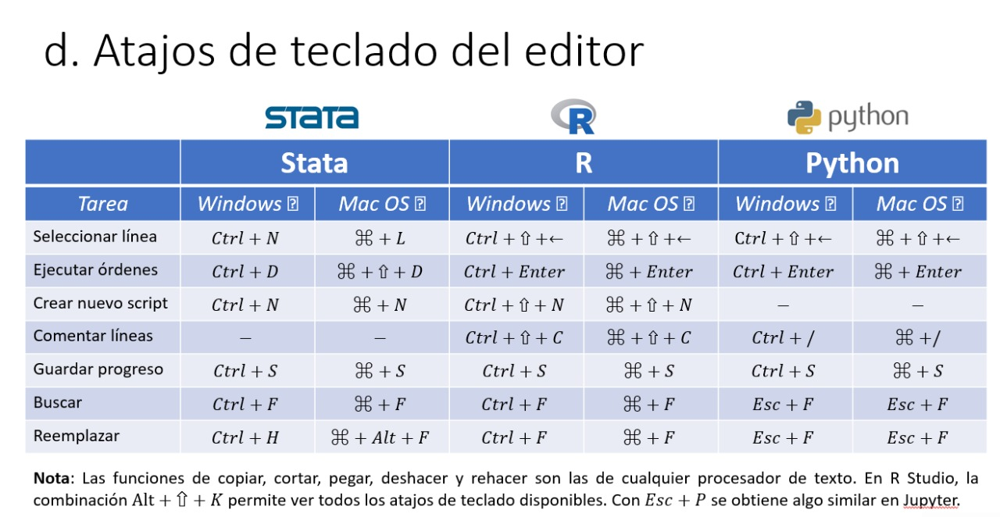

¡Una bienvenida al curso!
En esta página vamos a ir publicando los recursos y materiales para la participación en el curso de Herramientas de programación para el análisis de datos. Nuestra filosofía es dominar el algoritmo detrás del código. Pensar computacionalmente primero y luego aprender a movernos en las documentaciones, los foros, y las herramientas para escribir las cosas en cada lenguaje. Nos estaremos familiarizando con los fundamentos de R, Stata y Python.
Mensaje y bienvenida al módulo 3
¡Hola! Hoy empezamos el módulo 3 de programación que consta de 4 clases. Hoy todavía no vamos a usar Stata, R ni Python. No se preocupen si todavía no los han instalado. Pero sí vamos a programar. Entonces, si alcanzan a ver este mensaje, por favor creen una cuenta en Scratch siguiendo las siguientes instrucciones.
Nota: La próxima clase sí que vamos a comenzar con las herramientas instaladas así que igual intenten instalar todo para poder preguntar a soporte cualquier duda de nukak o a nosotros cualquier duda de R, RStudio (ambos) y Python.
Los ejercicios de la clase 3
Recuerden que para cargar sus ejercicios sus cuentas de Scratch solo deben crear un proyecto nuevo y luego en la pestaña de "Archivo" seleccionar Cargar desde tu ordenador.
¡Intenten el ejercicio 3 en casa! Ya todos los ejercicios quedaron arregladitos y bien armados.
El ejercicio 1 (este no lo descargamos, es co-creación y demostración de código en vivo).
Pts: la respuesta está en el gatico por ahí abajo.
El ejercicio 2 y su correspondiente solución.
El ejercicio 3 y su correspondiente solución.
Clase 3
Las diapositivas en ppt de la clase 3, y en pdf (sin animaciones) también.
Aquí queda la grabación con código de acceso GM5w&K9n
Además, chévere que le echen ojo a los dos videos que no alcanzamos a ver en clase. El mensaje de esto es que hay muchos algoritmos que solucionan la misma tarea y por sobretodo unos son más rápidos/eficientes que otros. ¡La tarea a continuación es ordenar la lista de menor a mayor! ¿Cómo le irá a nuestros bailarines audaces?
Clase 4
Aquí van las diapositivas de la clase 4 en ppt y formato pdf (sin animaciones).
Además está la grabación con código de acceso C&7Tyk^J
Algunos recursos: ¡CheatSheets!
¿Recuerdan esa idea de que no es necesario memorizar el código porque siempre pueden volver a los manuales? Las hojas de códigos son ejemplos de lugares donde podemos encontrar esos detalles de sintaxis, ya teniendo claro el algoritmo.
A continuación, algunas hojas de código para STATA, R y Python.
Algunos recursos: Para los usuarios de atajos de teclado
Algunos recursos: ¡repositorio de STATA de Miguel!
Para más información sobre STATA les dejamos el repositorio detallado de Miguel para su curso de taller de STATA. Ahí van a encontrar videos y materiales organizados por tema.
Los ejercicios de la clase 5
¡Para los ejercicios de hoy aquí van los archivos!
Para descargar los scripts individualmente pueden poner clic derecho y "guardar enlace como":
Ejercicio C5 - Python Spyder.py
Ejercicio C5 - R.R
Ejercicio C5 - Stata - sin coms.do
Ejercicio C5 - Stata.do
pob2005.csv
O bien para descargar el paquete completo como archivo .zip pueden hacer clic en el siguiente botón:
Paquete .zip Clase 5
Salón de clase
Los horarios de la clase son Martes y jueves de 6:00 p.m. a 8:00 p.m. y sábados de 10:00 a.m. a 12:00. La última sesión es de 3 horas, el sábado de 9:00 a.m. a 12:00 m.
La sala de Zoom para ingresar a la clase es esta con id de reunión 825 2597 9448.
Acerca del curso